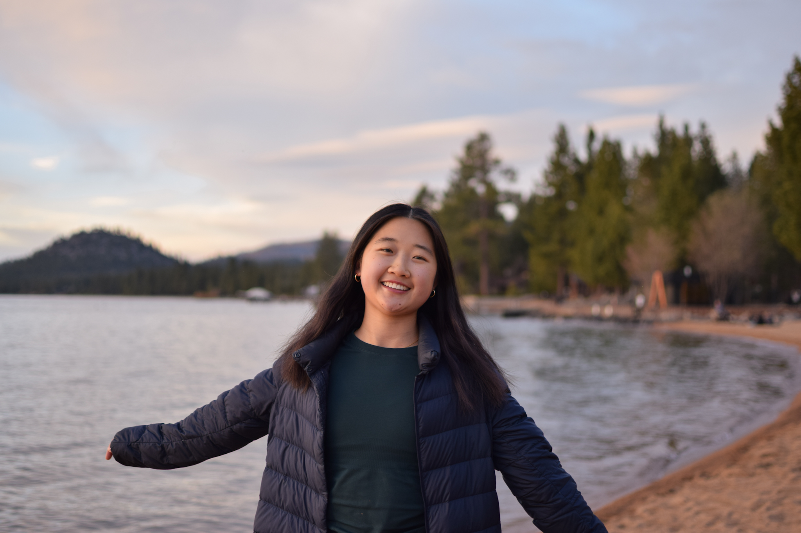

About Me
Hello! I'm Emily, a self-taught photographer based between Chicago, the Bay Area, and Shanghai. I picked up photography during the pandemic, with my dog Miko as my first subject, and I've been documenting raw, unfiltered moments ever since.
I love carrying my camera everywhere I go and capturing authentic stories from around the world. To me, the beauty of photography lies in embracing all the imperfections and seeing life through different perspectives. My work focuses on nature, wildlife, and culture, but I'm always open to exploring new styles and subjects. I enjoy the post-production process just as much as shooting, using editing to bring my vision for each image to life.
Outside photography, I enjoy running, biking, hiking (really anything outdoors), traveling, updating my Beli, and cooking delicious food. Current hyperfixations include roasting Okinawan sweet potatoes, listening to Noah Kahan on repeat, discovering hidden-gem restaurants, and trying to convert all my friends into Strava users. Always looking for the next epic excursion to embark on!
Reach out if you want to collaborate, have an idea in mind, or just want to say hi! I’ll get back to you as soon as I’m back from my run.